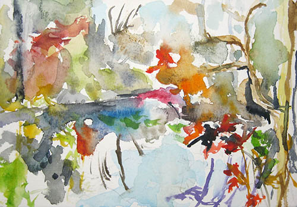

The Art of Seeing Art
Version 1.1, © 2007 by Dale Cotton, all rights reserved.
Part 3: Expression
{kind=link}
Fig. 1: Rembrandt Artiest in zijn studio,1629
Song without Words
In Part 2 I ended with:
This is really no different than the vastly different experiences various viewers at a professional baseball game will have. Someone who has played amateur baseball as a serious pastime for several years will have a very keen appreciation of the nuances of play and the tour-de-force skill levels he or she is witnessing. In contrast his or her spouse might see nothing but the most superficial fact that the ball was hit or missed by someone with a bat, caught or not caught by someone with a mitt, etc.
The typical non-artist looks through a representational painting or photograph and latches on to its subject matter, as though the picture were a window upon the real world. The viewer assumes the artist is saying: "this is what your eyes would have shown you if you had been standing where I was at a particular moment in time". The viewer assumes that any beauty or value comes from the real world and that the artist serves as reporter or documenter thereof.
We can say:
Spring is a pleasant time of year when flowers bloom, birds sing, and people engage in outdoor activities.
Or we can say:
Spring, the sweet Spring, is the year's pleasant king;
Then blossoms each thing, then maids dance in a ring,
Cold doth not sting, the pretty birds do sing–
Cuckoo, jugga-jugga, pu-we, to-witta-woo!
– as did Thomas Nash, a few years back.
Similarly, there can be many ways of depicting a young woman sitting on a chair. One may be your daughter's annual school photo, another is Da Vinci's Mona Lisa. It's not just what you say (or show) but how you say (or show) it.
Consider this snapshot of a park pond in New York:
Fig. 2: Twin Lakes snapshot
Now consider this watercolour miniature made at the same spot: 
{kind=link}
Fig. 3: Twin Lakes November #1, Linda Shedlock
The photograph is prose; the painting, poetry. Lacking a title, you may well have assumed Twin Lakes November #1 is pure abstract art. When I was growing up, most people, including many artists, found the new abstract style of art to be threatening. The question was: what was the artist saying? And the answer seemed to be written in a foreign tongue. Now, fifty years later many people have abstract paintings hanging in their homes. We have come to realize that an abstract painting is a song without words: the message, like music, is aimed at the heart, not the head.
With such an example of grace and lyricality as Twin Lakes November #1, we might conclude that representationalism in general, and photography in particular, are doomed to prosaic artlessness. In Part 4 we'll explore that premise a bit further.